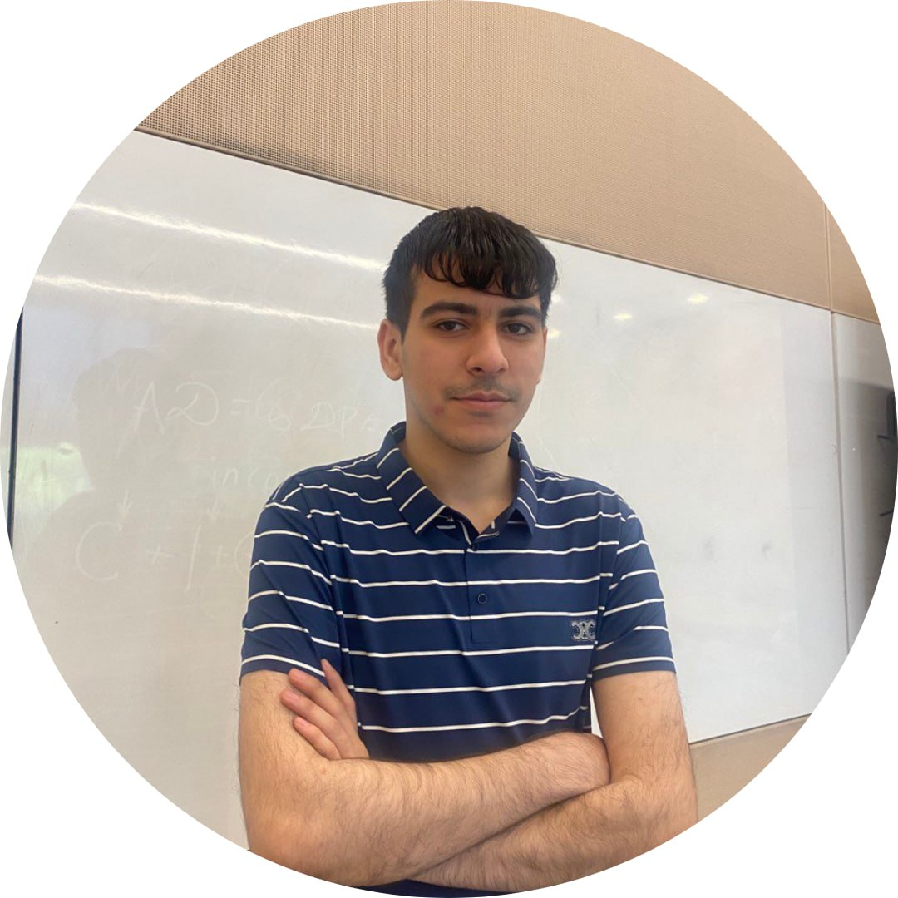

Home | Education | Contact Me | Questionnaire | Resume
|  |
Abdullah BayramovAbout Me: Hello, my name is Abdullah Bayramov. I am 20 yers old. I born and raised in Sumgayit. I have graduated from school number 36 and got in BSCE (Computer Engineering) in ADA University and then I changed my major to BSIT (Information Technology). Currently I am interested in programming and I my favorite programming language is JAVA. Additional InformationLanguages: Azerbaijani (native); English (fluent); Turkish (Professional working proficiency). Technical Skills: Java, C++, C, MySQL, Data Structures and Algorithms, HTML, Spring Boot. Interests: Football, Coding, Mathematics. |